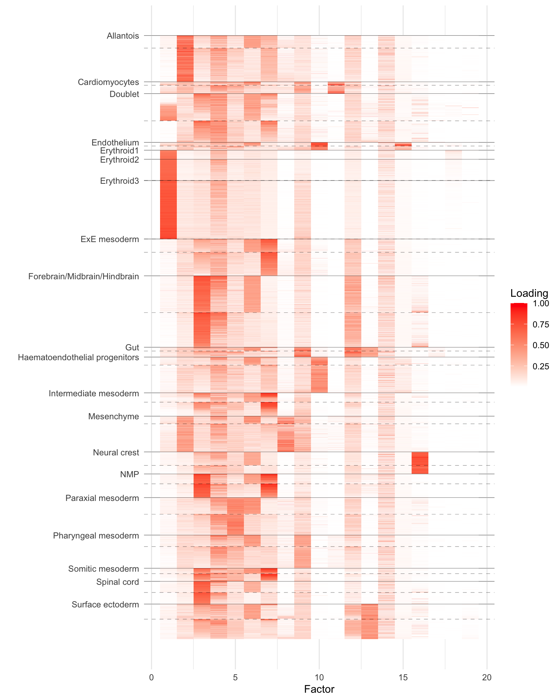

Last updated: 2022-04-13
Checks: 7 0
Knit directory: scFLASH/
This reproducible R Markdown analysis was created with workflowr (version 1.6.2). The Checks tab describes the reproducibility checks that were applied when the results were created. The Past versions tab lists the development history.
Great! Since the R Markdown file has been committed to the Git repository, you know the exact version of the code that produced these results.
Great job! The global environment was empty. Objects defined in the global environment can affect the analysis in your R Markdown file in unknown ways. For reproduciblity it’s best to always run the code in an empty environment.
The command set.seed(20181103) was run prior to running the code in the R Markdown file. Setting a seed ensures that any results that rely on randomness, e.g. subsampling or permutations, are reproducible.
Great job! Recording the operating system, R version, and package versions is critical for reproducibility.
Nice! There were no cached chunks for this analysis, so you can be confident that you successfully produced the results during this run.
Great job! Using relative paths to the files within your workflowr project makes it easier to run your code on other machines.
Great! You are using Git for version control. Tracking code development and connecting the code version to the results is critical for reproducibility.
The results in this page were generated with repository version f70523b. See the Past versions tab to see a history of the changes made to the R Markdown and HTML files.
Note that you need to be careful to ensure that all relevant files for the analysis have been committed to Git prior to generating the results (you can use wflow_publish or wflow_git_commit). workflowr only checks the R Markdown file, but you know if there are other scripts or data files that it depends on. Below is the status of the Git repository when the results were generated:
Ignored files:
Ignored: .DS_Store
Ignored: .Rhistory
Ignored: .Rproj.user/
Ignored: code/initialization/
Ignored: data-raw/10x_assigned_cell_types.R
Ignored: data/.DS_Store
Ignored: data/10x/
Ignored: data/Ensembl2Reactome.txt
Ignored: data/droplet.rds
Ignored: data/mus_pathways.rds
Ignored: output/backfit/
Ignored: output/final_montoro/
Ignored: output/lowrank/
Ignored: output/prior_type/
Ignored: output/pseudocount/
Ignored: output/pseudocount_redux/
Ignored: output/size_factors/
Ignored: output/var_reg/
Ignored: output/var_type/
Untracked files:
Untracked: analysis/NBapprox.Rmd
Untracked: analysis/final_pbmc.Rmd
Untracked: analysis/trachea4.Rmd
Untracked: code/alt_montoro/
Untracked: code/final_pbmc/
Untracked: code/missing_data.R
Untracked: code/prior_type/priortype_fits_pbmc.R
Untracked: code/pseudocount_redux/pseudocount_fits_pbmc.R
Untracked: code/pulseseq/
Untracked: code/size_factors/sizefactor_fits_pbmc.R
Untracked: code/trachea4.R
Untracked: mixsqp_fail.rds
Untracked: output/alt_montoro/
Untracked: output/deng/
Untracked: output/final_pbmc/
Untracked: output/pbmc/
Untracked: output/pijuan/
Untracked: output/pulseseq_fit.rds
Untracked: tmp.txt
Unstaged changes:
Modified: code/deng/deng2.R
Modified: code/utils.R
Modified: data-raw/pbmc.R
Note that any generated files, e.g. HTML, png, CSS, etc., are not included in this status report because it is ok for generated content to have uncommitted changes.
These are the previous versions of the repository in which changes were made to the R Markdown (analysis/pijuan_snn.Rmd) and HTML (docs/pijuan_snn.html) files. If you’ve configured a remote Git repository (see ?wflow_git_remote), click on the hyperlinks in the table below to view the files as they were in that past version.
| File | Version | Author | Date | Message |
|---|---|---|---|---|
| Rmd | f70523b | Jason Willwerscheid | 2022-04-13 | workflowr::wflow_publish(“analysis/pijuan_snn.Rmd”) |
library(tidyverse)
#> ── Attaching packages ─────────────────────────────────────── tidyverse 1.3.1 ──
#> ✓ ggplot2 3.3.5 ✓ purrr 0.3.4
#> ✓ tibble 3.1.6 ✓ dplyr 1.0.8
#> ✓ tidyr 1.2.0 ✓ stringr 1.4.0
#> ✓ readr 2.0.0 ✓ forcats 0.5.1
#> ── Conflicts ────────────────────────────────────────── tidyverse_conflicts() ──
#> x dplyr::filter() masks stats::filter()
#> x dplyr::lag() masks stats::lag()
library(flashier)
#> Loading required package: magrittr
#>
#> Attaching package: 'magrittr'
#> The following object is masked from 'package:purrr':
#>
#> set_names
#> The following object is masked from 'package:tidyr':
#>
#> extract
library(ggrepel)
library(Matrix)
#>
#> Attaching package: 'Matrix'
#> The following objects are masked from 'package:tidyr':
#>
#> expand, pack, unpackI’ve been looking at some datasets associated with Pijuan-Sala et al. The datasets can be obtained using the script in the download folder in the Marioni lab’s associated GitHub. The analysis_scripts folder is also well worth looking at, as the various analyses there detail the processing steps.
As a preliminary proof of concept, I run SNMF on one of these datasets. I use the slightly smaller “Tal1-chimera” dataset, which consists of raw counts for 56122 cells over 29453 genes. I removed genes with nonzero counts in fewer than 10 cells, which left 18515 genes. The resulting dataset occupied a little more than 2 GB in memory.
I added 20 semi-nonnegative factors using flashier. I capped the number of backfitting iterations at 100, and the fit was still steadily improving when the maximum number of iterations was reached. (I didn’t time the run, but it was reasonably fast: perhaps 4-8 hours on the mstephens Rstudio cloud.)
To clean up the plot, I removed cell types for which there were fewer than 500 cells. (That is, I included them in the fit but not in the visualization below.) I grouped by cell type and “tomato” status (i.e., Tal1 depletion) and then used PCA to sort cells within groups. The dashed lines indicate the breaks between non-tomato and tomato (there aren’t any non-tomato erythroid cells because, as the paper argues, Tal1 plays a fundamental role in the formation of erythroid cells). Clearly, some of the factors (especially 6) are picking up on the tomato status irrespective of cell type.
res <- readRDS("./output/pijuan/tal1.snmf.small")
do.heatmap <- function(res) {
fl <- res$fit
FF <- scale(fl$F.pm, center = FALSE, scale = apply(fl$F.pm, 2, max))
FF <- FF[, -1]
FF <- FF[, order(fl$pve[-1], decreasing = TRUE)]
colnames(FF) <- 1:ncol(FF)
# Remove rare cell types for now.
tib <- as_tibble(FF) %>%
mutate(Cell.type = res$celltype, Tomato = res$tomato) %>%
filter(Cell.type %in% names(which(table(res$celltype) > 500)))
pca_res <- prcomp(
as.matrix(tib %>% select(-Cell.type, -Tomato)),
retx = TRUE,
center = TRUE,
scale. = FALSE
)$x[, 1]
tib <- tib %>%
mutate(pca_res = pca_res) %>%
arrange(Cell.type, Tomato, pca_res) %>%
mutate(Cell.idx = row_number()) %>%
select(-pca_res)
cell_type <- tib$Cell.type
tomato <- tib$Tomato
tib <- tib %>%
pivot_longer(
-c(Cell.idx, Cell.type, Tomato),
names_to = "Factor",
values_to = "Loading",
values_drop_na = TRUE
) %>%
mutate(Factor = as.numeric(Factor))
cell_type_breaks <- c(1, which(cell_type[2:nrow(tib)] != cell_type[1:(nrow(tib) - 1)]))
tomato_breaks <- which(tomato[2:nrow(tib)] & !(tomato[1:(nrow(tib) - 1)]))
ggplot(tib, aes(x = Factor, y = -Cell.idx, fill = Loading)) +
geom_tile() +
scale_fill_gradient(low = "white", high = "red") +
labs(y = "") +
scale_y_continuous(breaks = -cell_type_breaks,
minor_breaks = NULL,
labels = unique(tib$Cell.type)) +
theme_minimal() +
geom_hline(yintercept = -cell_type_breaks, size = 0.1) +
geom_hline(yintercept = -tomato_breaks, size = 0.1, linetype = "dashed")
}
do.heatmap(res)
sessionInfo()
#> R version 3.5.3 (2019-03-11)
#> Platform: x86_64-apple-darwin15.6.0 (64-bit)
#> Running under: macOS Mojave 10.14.6
#>
#> Matrix products: default
#> BLAS: /Library/Frameworks/R.framework/Versions/3.5/Resources/lib/libRblas.0.dylib
#> LAPACK: /Library/Frameworks/R.framework/Versions/3.5/Resources/lib/libRlapack.dylib
#>
#> locale:
#> [1] en_US.UTF-8/en_US.UTF-8/en_US.UTF-8/C/en_US.UTF-8/en_US.UTF-8
#>
#> attached base packages:
#> [1] stats graphics grDevices utils datasets methods base
#>
#> other attached packages:
#> [1] Matrix_1.3-4 ggrepel_0.9.1 flashier_0.2.32 magrittr_2.0.2
#> [5] forcats_0.5.1 stringr_1.4.0 dplyr_1.0.8 purrr_0.3.4
#> [9] readr_2.0.0 tidyr_1.2.0 tibble_3.1.6 ggplot2_3.3.5
#> [13] tidyverse_1.3.1 workflowr_1.6.2
#>
#> loaded via a namespace (and not attached):
#> [1] fs_1.5.0 lubridate_1.7.10 httr_1.4.2 rprojroot_2.0.2
#> [5] tools_3.5.3 backports_1.1.3 bslib_0.3.1 utf8_1.2.2
#> [9] R6_2.5.1 irlba_2.3.3 DBI_1.0.0 colorspace_2.0-3
#> [13] withr_2.5.0 tidyselect_1.1.2 compiler_3.5.3 git2r_0.28.0
#> [17] cli_3.2.0 rvest_1.0.0 xml2_1.3.2 labeling_0.4.2
#> [21] horseshoe_0.2.0 sass_0.4.0 scales_1.1.1 SQUAREM_2021.1
#> [25] mixsqp_0.3-43 digest_0.6.29 rmarkdown_2.11 deconvolveR_1.2-1
#> [29] pkgconfig_2.0.3 htmltools_0.5.2 highr_0.9 dbplyr_2.1.1
#> [33] fastmap_1.1.0 invgamma_1.1 rlang_1.0.2 readxl_1.3.1
#> [37] rstudioapi_0.13 jquerylib_0.1.4 generics_0.1.2 farver_2.1.0
#> [41] jsonlite_1.8.0 Rcpp_1.0.8 munsell_0.5.0 fansi_1.0.2
#> [45] lifecycle_1.0.1 stringi_1.4.6 whisker_0.3-2 yaml_2.3.5
#> [49] grid_3.5.3 parallel_3.5.3 promises_1.2.0.1 crayon_1.5.0
#> [53] lattice_0.20-38 haven_2.3.1 splines_3.5.3 hms_1.1.1
#> [57] knitr_1.33 pillar_1.7.0 softImpute_1.4-1 reprex_2.0.0
#> [61] glue_1.6.2 evaluate_0.14 trust_0.1-8 modelr_0.1.8
#> [65] vctrs_0.3.8 tzdb_0.1.1 httpuv_1.5.2 cellranger_1.1.0
#> [69] gtable_0.3.0 ebnm_1.0-11 assertthat_0.2.1 ashr_2.2-54
#> [73] xfun_0.29 broom_0.7.6 later_1.3.0 truncnorm_1.0-8
#> [77] ellipsis_0.3.2